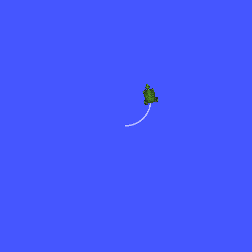
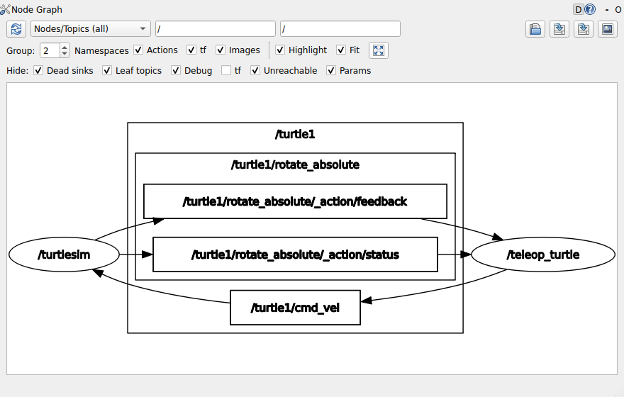
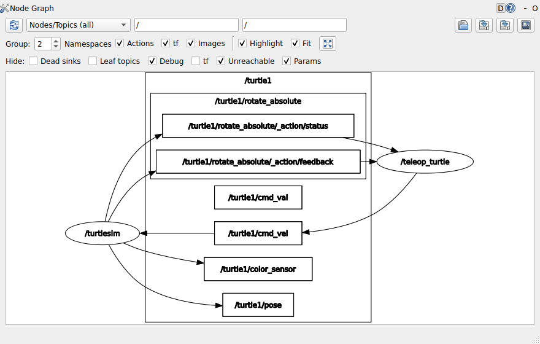
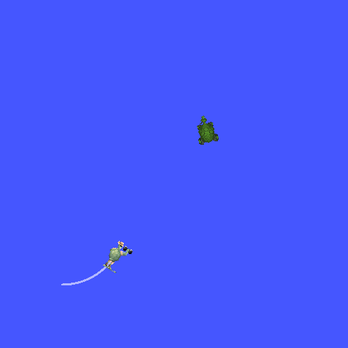
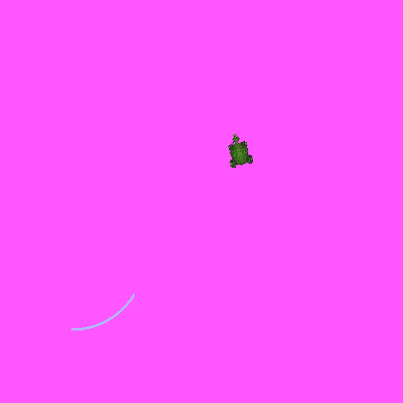
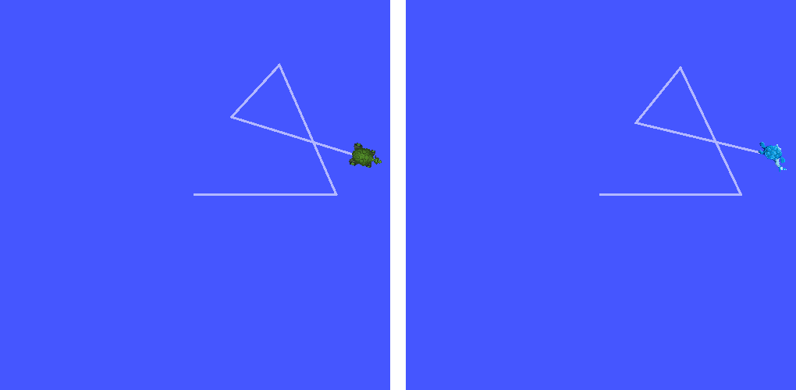

ROS 명령어
- 에이전트가 "노드를 띄웠고 잘 연결되었습니다"라고 했다. 그 말을 무엇으로 확인하나?
- 값이 실제로 흐르고 있는지, 흐른다면 초당 몇 번인지 어떻게 보나?
- 노드를 하나도 만들지 않고 터미널에서 거북이를 움직이고, 배경색을 바꾸고, 거북이를 하나 더 부를 수 있나?
- 명령을 보냈는데 거북이가 꿈쩍도 안 한다. 오류 메시지도 없다. 어디부터 보나?
- 방금 몰았던 길을 로봇 없이 똑같이 다시 보고 싶다. 무엇을 남겨 두면 되나?
지난 회차까지 노드·토픽·서비스·파라미터가 무엇인지를 세웠다. 노드는 따로 도는 프로그램이고, 토픽은 노드 사이에 계속 흐르는 메시지의 이름이고, 서비스는 한 번 묻고 한 번 답을 받는 통로이고, 파라미터는 노드가 가진 설정값이다. 오늘은 그것들이 지금 내 컴퓨터에서 실제로 어떤 상태인지를 들여다보는 명령을 다룬다.
ROS 2의 명령은 수십 개이고 옵션까지 치면 수백 개다. 원래 자료는 652줄짜리 명령어 사전이었다. 그런데 이 명령들을 외워 두어도 막상 막혔을 때 무엇을 먼저 쳐야 할지는 떠오르지 않는 경우가 많다. 명령은 에이전트도 잘 만든다. 사람에게 남는 일은 지금 무엇이 궁금한지 정하는 것과 나온 출력을 읽는 것이다.
그래서 오늘 절은 전부 같은 네 칸으로 되어 있다 — 무엇이 궁금한가 → 그때 이걸 친다 → 출력을 이렇게 읽는다 → 에이전트에게 시키면. 세 번째 칸이 알맹이다. 에이전트에게 명령을 맡기더라도 돌아온 출력을 읽는 것은 여러분이고, 그 읽기가 되어야 "잘 연결되었습니다"라는 말이 맞는지 판단할 수 있다.
한 장 요약
무엇을 먼저 볼지: 왼쪽 「무엇이 궁금한가」 열이다. 이 열의 질문을 떠올릴 수 있으면 명령은 에이전트에게 물어도 된다.
| 무엇이 궁금한가 | 그때 이걸 친다 | 출력에서 볼 곳 | 절 |
|---|---|---|---|
| 내 노드가 떠 있나 | ros2 node list | 노드 이름이 목록에 있나 | ① |
| 이 노드가 무엇을 받고 무엇을 내보내나 | ros2 node info /노드 | Subscribers · Publishers | ① |
| 어떤 토픽이 있고 타입이 무엇인가 | ros2 topic list -t | 이름 한 글자, 대괄호 안 타입 | ② |
| 값이 실제로 흐르나, 값이 얼마인가 | ros2 topic echo /토픽 | 숫자가 바뀌나 | ③ |
| 초당 몇 번 오나 | ros2 topic hz /토픽 | average rate | ④ |
| 메시지 안에 무엇이 들었나 | ros2 interface show 타입 | 필드 이름과 타입 | ⑤ |
| 노드 없이 메시지를 보내 보고 싶다 | ros2 topic pub | 받는 쪽(거북이)이 움직이나 | ⑥ |
| 누가 보내고 누가 받나, 둘이 붙을 수 있나 | ros2 topic info -v /토픽 | count · Reliability | ⑦ |
| 연결을 한눈에 보고 싶다 | rqt_graph | 화살표가 이어지나 | ⑧ |
| 서비스를 불러 보고 싶다 | ros2 service list · type · call | response | ⑨ |
| 설정값을 읽고 바꾸고 싶다 | ros2 param list · get · set | Set parameter successful | ⑩ |
| 방금 그 장면을 다시 보고 싶다 | ros2 bag record · play | Messages 개수 | ⑪ |
| 설치·환경 자체가 이상하다 | ros2 doctor | checks passed | ⑫ |
아래 출력은 전부 실제로 실행해서 받은 것이다.
돌린 곳: 컨테이너(우분투 24.04 + ROS 2 Jazzy, 사용자 이름 ubuntu).
여러분의 WSL에서는 시각(숫자로 찍히는 타임스탬프)·임시 노드 번호·네트워크 주소가 다르게 나온다.
그 밖의 모양은 같다.
ros2 명령의 구조와 실습 준비 🟢 맡겨도 된다
오늘 칠 명령이 왜 다 ros2로 시작할까?
ROS 1에서는 rosnode·rostopic·rosservice처럼 할 일마다 실행 파일이 따로 있었다.
ROS 2는 이것을 ros2 하나로 모으고, 그 뒤에 무엇을과 어떻게를 붙이게 했다.
ros2 <무엇을> <어떻게> [대상] [옵션]
ros2 node list
ros2 node info /turtlesim
ros2 topic echo /turtle1/pose --once
ros2 param set /turtlesim background_r 255🆕 이 모양에서 처음 나오는 것
ros2 <무엇을> <어떻게>- 두 번째 자리를 명령(command), 세 번째 자리를 동사(verb)라고 부른다.
오늘 다루는 명령은
nodetopicinterfaceserviceparambagdoctor이고, 동사는 대부분list(목록) ·info(자세히) ·echo/get(읽기) ·pub/set/call(보내기·바꾸기) 중 하나다. ros2 topic -h·ros2 topic pub -h- 어느 자리에서든
-h(--help)를 붙이면 그 자리에 올 수 있는 것과 옵션이 나온다. 동사 이름이 기억나지 않을 때 가장 먼저 해 볼 만한 방법이다. 탭(Tab) 키를 두 번 눌러도 후보가 나온다.
예를 들어 topic 뒤에 무엇이 올 수 있는지 물으면 이렇게 나온다. 오늘 쓰는 topic의 동사(list·echo·hz·info·pub)가 이 목록 안에 다 있다.
$ ros2 topic -h
usage: ros2 topic [-h] [--include-hidden-topics]
Call `ros2 topic <command> -h` for more detailed usage. ...
Various topic related sub-commands
options:
-h, --help show this help message and exit
--include-hidden-topics
Consider hidden topics as well
Commands:
bw Display bandwidth used by topic
delay Display delay of topic from timestamp in header
echo Output messages from a topic
find Output a list of available topics of a given type
hz Print the average receiving rate to screen
info Print information about a topic
list Output a list of available topics
pub Publish a message to a topic
type Print a topic's type
Call `ros2 topic <command> -h` for more detailed usage.
도움말은 동사들을 Commands라고 부른다. 이 자료에서는 둘째 자리와 셋째 자리를 구별하려고 셋째 자리를 「동사」라고 부른다.
실습 대상은 오늘 내내 turtlesim이다. 명령이 먹으면 화면 속 거북이가 움직이므로 맞았는지 틀렸는지를 글자가 아니라 눈으로 확인할 수 있다. 터미널을 세 개 열고, 앞의 두 개에서 노드 두 개를 띄운다. 이 두 노드는 회차 끝까지 켜 둔다.
# 터미널 1 — 거북이 창을 띄우는 노드
$ ros2 run turtlesim turtlesim_node
[INFO] [1792271276.736645389] [turtlesim]: Starting turtlesim with node name /turtlesim
[INFO] [1792271276.740530745] [turtlesim]: Spawning turtle [turtle1] at x=[5.544445], y=[5.544445], theta=[0.000000]
# 터미널 2 — 방향키로 거북이를 모는 노드
$ ros2 run turtlesim turtle_teleop_key
Reading from keyboard
---------------------------
Use arrow keys to move the turtle.
Use g|b|v|c|d|e|r|t keys to rotate to absolute orientations. 'f' to cancel a rotation.
'q' to quit.
# 터미널 3 — 오늘 명령은 전부 여기서 친다
터미널 2는 그 창에 커서가 있을 때만 방향키를 받는다. 거북이를 몰 때는 터미널 2를 누르고,
명령을 칠 때는 터미널 3으로 돌아온다.
세 터미널 모두 ros2가 먹어야 한다 — .bashrc에 넣어 둔 source /opt/ros/jazzy/setup.bash가
새 터미널마다 자동으로 걸리기 때문이다. ros2: command not found가 나오면 그 줄부터 확인한다.
① ros2 node list · info 🔴 출력은 내가 읽는다
무엇이 궁금한가
"노드를 띄웠다"는 말은 사실 두 가지를 뜻할 수 있다. 프로그램이 실행됐다는 것과, 그 프로그램이 ROS 노드로서 다른 노드에게 보인다는 것이다. 앞의 것은 터미널에 글자가 찍히는 것으로 알 수 있지만 뒤의 것은 따로 물어봐야 한다. 지금 이 컴퓨터에서 보이는 노드는 무엇 무엇인가?
그때 이걸 친다
$ ros2 node list
/teleop_turtle
/turtlesim출력을 이렇게 읽는다
두 줄이 나왔다. 터미널 1·2에서 띄운 두 노드다. 그런데 이름을 잘 보면 친 것과 다르다.
ros2 run에 친 이름 (실행 파일) | node list에 나온 이름 (노드 이름) |
|---|---|
turtlesim_node | /turtlesim |
turtle_teleop_key | /teleop_turtle |
ros2 run에는 실행 파일 이름을,
ros2 node info·ros2 param에는 노드 이름을 넣는다. 바꿔 넣으면 이렇게 된다.
$ ros2 node info /turtlesim_node
Unable to find node '/turtlesim_node'
노드가 무엇을 받고 무엇을 내보내는지는 info로 본다. 출력이 길다. 굵게 표시한 줄만 먼저 본다.
$ ros2 node info /turtlesim
/turtlesim
Subscribers:
/parameter_events: rcl_interfaces/msg/ParameterEvent
/turtle1/cmd_vel: geometry_msgs/msg/Twist
Publishers:
/parameter_events: rcl_interfaces/msg/ParameterEvent
/rosout: rcl_interfaces/msg/Log
/turtle1/color_sensor: turtlesim/msg/Color
/turtle1/pose: turtlesim/msg/Pose
Service Servers:
/clear: std_srvs/srv/Empty
/kill: turtlesim/srv/Kill
/reset: std_srvs/srv/Empty
/spawn: turtlesim/srv/Spawn
/turtle1/set_pen: turtlesim/srv/SetPen
/turtle1/teleport_absolute: turtlesim/srv/TeleportAbsolute
/turtle1/teleport_relative: turtlesim/srv/TeleportRelative
/turtlesim/describe_parameters: rcl_interfaces/srv/DescribeParameters
/turtlesim/get_parameter_types: rcl_interfaces/srv/GetParameterTypes
/turtlesim/get_parameters: rcl_interfaces/srv/GetParameters
/turtlesim/get_type_description: type_description_interfaces/srv/GetTypeDescription
/turtlesim/list_parameters: rcl_interfaces/srv/ListParameters
/turtlesim/set_parameters: rcl_interfaces/srv/SetParameters
/turtlesim/set_parameters_atomically: rcl_interfaces/srv/SetParametersAtomically
Service Clients:
Action Servers:
/turtle1/rotate_absolute: turtlesim/action/RotateAbsolute
Action Clients:
무엇을 먼저 볼지: 각 줄은 이름: 타입 두 토막이다. 왼쪽이 토픽·서비스 이름, 오른쪽이 그 안에 오가는 메시지의 타입이다.
| 굵은 줄 | 뜻 | 이 회차에서 다시 쓰는 곳 |
|---|---|---|
Subscribers 아래 /turtle1/cmd_vel | 거북이는 속도 명령을 받는다 | ⑥절 — 여기로 명령을 보낸다 |
Publishers 아래 /turtle1/pose | 거북이는 자기 위치를 내보낸다 | ③·④절 — 이 값을 읽고 주기를 잰다 |
Service Servers 아래 /spawn | 거북이를 하나 더 만들어 달라는 요청을 받는다 | ⑨절 |
/turtlesim/…_parameters로 끝나는 서비스 여섯 개는 turtlesim이 직접 만든 것이 아니라
모든 노드에 자동으로 붙는 것이다(⑩절의 ros2 param이 이 통로를 쓴다). 처음에는 건너뛰고 읽어도 된다.
방향키를 받는 쪽은 어떨까? 같은 명령을 /teleop_turtle에 친다.
$ ros2 node info /teleop_turtle
/teleop_turtle
Subscribers:
/parameter_events: rcl_interfaces/msg/ParameterEvent
Publishers:
/parameter_events: rcl_interfaces/msg/ParameterEvent
/rosout: rcl_interfaces/msg/Log
/turtle1/cmd_vel: geometry_msgs/msg/Twist
Service Servers:
/teleop_turtle/describe_parameters: rcl_interfaces/srv/DescribeParameters
(… 자동으로 붙는 파라미터 서비스 여섯 개 생략 …)
Service Clients:
Action Servers:
Action Clients:
/turtle1/rotate_absolute: turtlesim/action/RotateAbsolute
/teleop_turtle의 Publishers에 있는 /turtle1/cmd_vel이
/turtlesim의 Subscribers에 있는 것과 이름도 타입도 같다.
그래서 둘이 이어진다. 두 출력을 나란히 놓고 이름을 맞춰 보는 것 — 이것이 연결을 확인하는 가장 기본적인 방법이다.
에이전트에게 시키면
프롬프트 끝의 한 문장이 중요하다. 표만 받으면 그 표가 실제 출력에서 나온 것인지 알 수 없다. 출력 원문이 같이 오면 여러분이 위에서 읽은 방식대로 대조할 수 있다.
② ros2 topic list -t 🔴 이름은 내가 대조한다
무엇이 궁금한가
노드를 하나씩 info로 열어 보는 것은 노드가 많아지면 번거롭다.
거꾸로 물을 수도 있다 — 지금 이 컴퓨터에 어떤 토픽들이 있고, 각각 어떤 타입인가?
내 코드에 적은 토픽 이름이 이 목록에 글자 하나 틀리지 않고 있는지 보는 것이 이 명령의 주된 쓰임이다.
그때 이걸 친다
$ ros2 topic list
/parameter_events
/rosout
/turtle1/cmd_vel
/turtle1/color_sensor
/turtle1/pose
$ ros2 topic list -t
/parameter_events [rcl_interfaces/msg/ParameterEvent]
/rosout [rcl_interfaces/msg/Log]
/turtle1/cmd_vel [geometry_msgs/msg/Twist]
/turtle1/color_sensor [turtlesim/msg/Color]
/turtle1/pose [turtlesim/msg/Pose]🆕 이 출력에서 처음 나오는 것
-t- 타입(type)을 대괄호 안에 같이 찍어 달라는 옵션이다.
여기서는
/turtle1/cmd_vel에 오가는 메시지가geometry_msgs/msg/Twist라는 것을 한 번에 알아냈다. geometry_msgs/msg/Twist- 타입 이름은
패키지/종류/이름세 토막이다. 가운데가msg면 토픽용 메시지,srv면 서비스용(⑨절)이다. 첫 토막이 그 정의가 들어 있는 패키지라서 나중에 C++ 코드에서 이 타입을 쓸 때 어느 패키지를 의존성에 넣어야 하는지도 여기서 읽힌다.
출력을 이렇게 읽는다
| 토픽 | 누가 만든 것인가 | 어떻게 대하나 |
|---|---|---|
/turtle1/cmd_vel · /turtle1/pose · /turtle1/color_sensor | turtlesim 노드 | 오늘 쓰는 토픽. 이름 앞의 /turtle1/은 거북이 이름이다 |
/parameter_events · /rosout | 모든 노드에 자동으로 붙는다 | 파라미터 변경 알림과 로그 모음. 노드가 하나라도 뜨면 늘 보인다 |
/turtle1/cmd_vel로 보내고 받는 쪽이 /turtle1/cmd_vel을 기다려야 이어진다.
한 글자만 달라도 ROS는 그것을 다른 토픽으로 여긴다. 오류는 나지 않는다 —
⑥절 끝의 함정 상자에서 실제로 보게 된다.
에이전트에게 시키면
③ ros2 topic echo 🔴 값은 내가 본다
무엇이 궁금한가
토픽이 목록에 있다는 것은 누군가 그 이름을 쓰겠다고 했다는 뜻일 뿐이다. 실제로 값이 흐르는지는 다른 질문이다. 지금 이 토픽에 무엇이 오가고 있나? 그 값은 얼마인가?
그때 이걸 친다
거북이의 현재 위치를 한 번만 받아 본다.
$ ros2 topic echo --once /turtle1/pose
x: 5.544444561004639
y: 5.544444561004639
theta: 0.0
linear_velocity: 0.0
angular_velocity: 0.0
---🆕 이 출력에서 처음 나오는 것
--once- 메시지를 하나만 받고 끝낸다. 붙이지 않으면
Ctrl+C를 누를 때까지 계속 찍는다. 여기서는 위치가 지금 얼마인지만 알고 싶어서 붙였다. ---- 메시지 하나가 끝났다는 표시다. 계속 받을 때는 이 줄을 경계로 메시지가 하나씩 이어진다.
출력을 이렇게 읽는다
x와 y는 창 안에서의 위치, theta는 거북이가 바라보는 방향이다.
theta의 단위는 도가 아니라 라디안이다(0이면 오른쪽, 약 1.57이면 위쪽).
처음 위치가 5.544…인 것은 turtlesim 창의 한 변이 약 11.09이고 그 한가운데에 첫 거북이를 놓기 때문이다.
이번에는 멈추지 않고 계속 받아 둔 채로, 터미널 2에서 위쪽 화살표를 한 번, 왼쪽 화살표를 한 번 눌러 본다.
거북이에게 가는 명령 토픽 /turtle1/cmd_vel을 본다.
$ ros2 topic echo /turtle1/cmd_vel
linear:
x: 2.0
y: 0.0
z: 0.0
angular:
x: 0.0
y: 0.0
z: 0.0
---
linear:
x: 0.0
y: 0.0
z: 0.0
angular:
x: 0.0
y: 0.0
z: 2.0
---| 누른 키 | 찍힌 메시지 | 뜻 |
|---|---|---|
| 위쪽 화살표 | linear.x: 2.0 | 앞으로 초당 2.0만큼 가라 |
| 왼쪽 화살표 | angular.z: 2.0 | 제자리에서 초당 2.0 라디안 왼쪽으로 돌아라 |
echo 화면은 조용하다 — 그것이 고장이 아니라는 것을 알고 있어야 ④절의 결과가 읽힌다.
둘째, 메시지 하나에 숫자가 여섯 개 있지만 거북이에게 의미 있는 것은 linear.x와 angular.z 둘뿐이다.
바닥을 굴러다니는 로봇은 옆으로(y) 가거나 위로(z) 뜰 수 없기 때문이다. 터틀봇도 같다.
두 번 누른 뒤의 위치를 다시 받아 본다.
$ ros2 topic echo --once /turtle1/pose
x: 6.152444362640381
y: 5.544444561004639
theta: 2.0160000324249268
linear_velocity: 0.0
angular_velocity: 0.0
---
x가 5.54에서 6.15로 늘었고 theta가 0에서 2.02가 되었다.
값이 바뀐다는 것 — 이것이 「흐르고 있다」의 증거다.
회전이 2.0 라디안쯤인 것은 turtlesim이 속도 명령 하나를 약 1초 동안 적용하기 때문이다(초당 2.0 × 1초).
이름을 한 글자 틀리게 치면 이렇게 나오고, 그 상태로 계속 기다린다.
$ ros2 topic echo /turtle1/cmd_val
WARNING: topic [/turtle1/cmd_val] does not appear to be published yet
Could not determine the type for the passed topic첫 줄은 「아직 아무도 이 이름으로 보내지 않았다」, 둘째 줄은 「그래서 타입도 알 수 없다」는 뜻이다. 오류로 끝나지 않고 기다리는 것은, 보내는 쪽이 나중에 뜰 수도 있기 때문이다. 이 두 줄이 보이면 고장을 의심하기 전에 ②절의 목록과 이름을 대조해 볼 만하다.
에이전트에게 시키면
④ ros2 topic hz 🔴 숫자는 내가 판단한다
무엇이 궁금한가
값이 흐르는 것을 봤다. 그런데 얼마나 자주 오는가? 로봇에서는 이것이 자주 문제가 된다. 라이다가 초당 다섯 번 재는데 내 노드가 초당 두 번밖에 처리하지 못하면, 로봇은 0.5초 전의 세상을 보고 움직이게 된다. 그 사이에 콘 앞까지 가 버릴 수도 있다. 이 토픽은 초당 몇 번 오고, 그 간격은 고른가?
그때 이걸 친다
$ ros2 topic hz /turtle1/pose
average rate: 62.552
min: 0.015s max: 0.017s std dev: 0.00047s window: 64
average rate: 62.504
min: 0.015s max: 0.017s std dev: 0.00046s window: 127
average rate: 62.511
min: 0.015s max: 0.017s std dev: 0.00045s window: 190
average rate: 62.509
min: 0.015s max: 0.017s std dev: 0.00045s window: 253
average rate: 62.514
min: 0.015s max: 0.017s std dev: 0.00046s window: 316Ctrl+C를 누를 때까지 1초마다 두 줄씩 찍는다. 위는 5초쯤 받은 것이다.
출력을 이렇게 읽는다
| 칸 | 뜻 | 위 출력에서 |
|---|---|---|
average rate | 초당 평균 몇 개 왔나 (Hz) | 약 62.5 — turtlesim은 위치를 초당 62.5번 내보낸다 |
min · max | 메시지 사이 간격의 가장 짧은 것 · 가장 긴 것 | 0.015초 ~ 0.017초 — 거의 고르다 |
std dev | 간격이 얼마나 들쭉날쭉한가 (표준편차) | 0.0005초 — 작다 |
window | 지금까지 몇 개를 모아 계산했나 | 1초에 약 63개씩 는다 |
같은 명령을 /turtle1/cmd_vel에 쳐 본다. 터미널 2에서 키는 누르지 않는다.
$ ros2 topic hz /turtle1/cmd_vel
아무것도 나오지 않는다. 오류도 없다. ③절에서 본 것처럼 teleop은 키를 누를 때만 보내므로 지금은 셀 메시지가 없다. 일정하게 보내는 쪽이 있을 때 이 토픽이 어떻게 재지는지는 ⑥절에서 직접 메시지를 보내 본 뒤에 다시 잰다.
hz가 알려 주는 것은 셋이다 —
오나 안 오나(아무것도 안 찍히면 지금 아무도 안 보낸다),
얼마나 자주 오나(average rate),
고르게 오나(max가 min보다 훨씬 크면 가끔 크게 늦는 순간이 있다).
셋째가 로봇에서 특히 중요하다. 평균은 멀쩡한데 가끔 한 번씩 0.5초가 비면, 로봇은 그 순간 반응을 놓친다.
27회에서는 이 명령이 이렇게 쓰인다 — 터틀봇의 라이다 토픽 /scan을 재면 average rate가 라이다 사양(초당 몇 번 재는가)에 가깝게 나와야 하고, 내 노드가 발행하는 속도 명령도 같은 방법으로 잰다. 지금은 turtlesim의 62.5와 10.0으로 읽는 법만 익혀 두면 된다.
에이전트에게 시키면
마지막 문장을 넣은 이유가 있다. hz가 아무것도 안 찍을 때 에이전트가 시간이 다 돼서 끝났다고만 보고하는 경우가 있다.
「아무것도 안 왔다」는 그 자체로 중요한 결과다.
⑤ ros2 interface show 🟢 맡겨도 된다
무엇이 궁금한가
③절에서 /turtle1/cmd_vel의 메시지에는 linear와 angular가 있었고, 각각 안에 x·y·z가 있었다.
그것은 마침 그 메시지에 그런 값이 들어 있었던 것일까, 아니면 정해진 모양일까?
다음 절에서 이 토픽에 직접 메시지를 써서 보내려면 정확한 필드 이름을 알아야 한다.
이 타입의 메시지에는 어떤 필드가 어떤 타입으로 들어 있나?
그때 이걸 친다
②절의 -t가 알려 준 타입 이름을 그대로 넣는다.
$ ros2 interface show geometry_msgs/msg/Twist
# This expresses velocity in free space broken into its linear and angular parts.
Vector3 linear
float64 x
float64 y
float64 z
Vector3 angular
float64 x
float64 y
float64 z
$ ros2 interface show turtlesim/msg/Pose
float32 x
float32 y
float32 theta
float32 linear_velocity
float32 angular_velocity출력을 이렇게 읽는다
한 줄이 필드 하나이고 타입 이름 순서다. #으로 시작하는 줄은 설명(주석)이다.
Twist는 Vector3 타입 필드 두 개(linear·angular)로 되어 있고,
들여 쓴 줄은 그 Vector3 안에 다시 무엇이 들었는지를 펼쳐 보인 것이다.
그래서 ③절의 출력에서 linear: 아래에 x·y·z가 들여 쓰여 있었다.
| 필드 타입 | 뜻 | C++에서 (19회 이후) |
|---|---|---|
float64 | 64비트 실수 | double |
float32 | 32비트 실수 | float |
Vector3 | 다른 메시지 타입 (x·y·z 묶음) | 멤버로 들어 있는 구조체 |
interface show는 그 파일을 보여 준다.
코드를 쓸 때 필드 이름이 기억나지 않으면 추측하지 말고 이것을 쳐서 보는 편이 빠르다 —
pose.theta인지 pose.angle인지는 이 출력에 답이 있다.
에이전트에게 시키면
⑥ ros2 topic pub 🟡 맡기되 결과는 내가 본다
무엇이 궁금한가
지금까지는 읽기만 했다. 거꾸로, 노드를 하나도 만들지 않고 터미널에서 직접 메시지를 보낼 수는 없을까? 이것이 되면 쓸모가 크다. 20회에서 거북이를 모는 노드를 짜게 되는데, 그 노드가 안 움직일 때 받는 쪽(거북이)이 문제인지 보내는 쪽(내 코드)이 문제인지를 가를 수 있다. 터미널에서 보낸 메시지로 거북이가 움직이면 받는 쪽은 멀쩡한 것이다.
그때 이걸 친다
모양은 ros2 topic pub [옵션] 토픽 타입 '값'이다. ⑤절에서 본 필드 이름을 그대로 쓴다.
$ ros2 topic pub --once /turtle1/cmd_vel geometry_msgs/msg/Twist '{linear: {x: 2.0}, angular: {z: 1.8}}'
publisher: beginning loop
publishing #1: geometry_msgs.msg.Twist(linear=geometry_msgs.msg.Vector3(x=2.0, y=0.0, z=0.0), angular=geometry_msgs.msg.Vector3(x=0.0, y=0.0, z=1.8))
🆕 이 명령에서 처음 나오는 것
'{linear: {x: 2.0}, angular: {z: 1.8}}'- 보낼 값을 YAML이라는 형식으로 적은 것이다.
이름: 값을 중괄호로 묶고, 안에 또 메시지가 있으면 중괄호를 한 겹 더 쓴다. ⑤절의 들여쓰기와 모양이 같다. 적지 않은 필드는 0으로 채워진다 — 출력의y=0.0, z=0.0이 그것이다. 바깥의 작은따옴표는 쉘이 중괄호와 띄어쓰기를 건드리지 못하게 막는 것이다. --once·--rate N--once는 한 번만 보내고 끝낸다.--rate N은 초당 N번씩Ctrl+C를 누를 때까지 보낸다. 둘 다 없으면 초당 1번이다.
출력을 이렇게 읽는다
publishing #1: 줄은 보냈다는 뜻이지 누가 받았다는 뜻이 아니다.
받았는지는 받는 쪽에서 확인한다. 이 경우에는 거북이가 움직였나를 보면 된다.

--once로 한 번 보낸 뒤의 화면. 거북이가 짧은 호를 그리고 멈췄다.
앞으로 가면서(linear.x) 동시에 왼쪽으로 돌았기(angular.z) 때문에 직선이 아니라 곡선이다.위치를 받아 보면 숫자로도 확인된다.
$ ros2 topic echo --once /turtle1/pose
x: 6.602816581726074
y: 6.938989639282227
theta: 1.8143999576568604
linear_velocity: 0.0
angular_velocity: 0.0
---
theta가 1.81 — 보낸 angular.z: 1.8을 약 1초 적용한 값이다.
turtlesim은 속도 명령이 1초 넘게 안 오면 거북이를 세운다. 그래서 --once로는 잠깐만 움직인다.
계속 돌게 하려면 계속 보낸다.
$ ros2 topic pub --rate 1 /turtle1/cmd_vel geometry_msgs/msg/Twist '{linear: {x: 2.0}, angular: {z: 1.8}}'
publisher: beginning loop
publishing #1: geometry_msgs.msg.Twist(linear=geometry_msgs.msg.Vector3(x=2.0, y=0.0, z=0.0), angular=geometry_msgs.msg.Vector3(x=0.0, y=0.0, z=1.8))
publishing #2: geometry_msgs.msg.Twist(linear=geometry_msgs.msg.Vector3(x=2.0, y=0.0, z=0.0), angular=geometry_msgs.msg.Vector3(x=0.0, y=0.0, z=1.8))
publishing #3: geometry_msgs.msg.Twist(linear=geometry_msgs.msg.Vector3(x=2.0, y=0.0, z=0.0), angular=geometry_msgs.msg.Vector3(x=0.0, y=0.0, z=1.8))
^C
초당 한 번씩 보내니 거북이가 원을 그리며 계속 돈다. Ctrl+C로 멈추면 1초 뒤 거북이도 선다.
④절에서 아무것도 안 찍히던 /turtle1/cmd_vel을, 이번에는 --rate 10으로 보내 둔 채 다른 터미널에서 다시 재 본다.
$ ros2 topic pub --rate 10 /turtle1/cmd_vel geometry_msgs/msg/Twist '{linear: {x: 0.5}}'
(… publishing #1, #2, … 줄 생략 …)
# 다른 터미널에서
$ ros2 topic hz /turtle1/cmd_vel
average rate: 9.999
min: 0.100s max: 0.100s std dev: 0.00010s window: 11
average rate: 10.001
min: 0.100s max: 0.100s std dev: 0.00011s window: 22보낸 대로 초당 10번, 0.1초 간격이 재졌다. 20회에서 타이머로 명령을 보내는 노드를 만들면 그 노드가 정말 정한 주기대로 보내는지 이 방법으로 확인한다.
값을 틀리게 적으면 보내기 전에 막힌다. 두 가지가 흔하다.
$ ros2 topic pub --once /turtle1/cmd_vel geometry_msgs/msg/twist '{linear: {x: 2.0}}'
The passed message type is invalid
$ ros2 topic pub --once /turtle1/cmd_vel geometry_msgs/msg/Twist '{linear: {x: 2.0}, angular: {zz: 1.8}}'
Failed to populate field: 'Vector3' object has no attribute 'zz'
첫째는 타입 이름의 대소문자(twist ↔ Twist)가 틀린 것이고, 둘째는 없는 필드 이름(zz)을 쓴 것이다.
이 둘은 오류 메시지가 나오므로 오히려 쉽다. 정말 곤란한 것은 아래처럼 아무 오류 없이 안 되는 경우다.
cmd_vel을 cmd_val로 한 글자 틀리게 쳐 본다. 거북이는 꿈쩍도 하지 않는다.
그런데 화면에는 정상일 때와 똑같은 줄이 찍힌다.
$ ros2 topic pub --rate 1 /turtle1/cmd_val geometry_msgs/msg/Twist '{linear: {x: 2.0}, angular: {z: 1.8}}'
publisher: beginning loop
publishing #1: geometry_msgs.msg.Twist(linear=geometry_msgs.msg.Vector3(x=2.0, y=0.0, z=0.0), angular=geometry_msgs.msg.Vector3(x=0.0, y=0.0, z=1.8))
publishing #2: geometry_msgs.msg.Twist(linear=geometry_msgs.msg.Vector3(x=2.0, y=0.0, z=0.0), angular=geometry_msgs.msg.Vector3(x=0.0, y=0.0, z=1.8))
…보내는 것이 걸려 있는 동안 다른 터미널에서 ②절의 목록을 다시 본다.
$ ros2 topic list
/parameter_events
/rosout
/turtle1/cmd_val
/turtle1/cmd_vel
/turtle1/color_sensor
/turtle1/pose
$ ros2 topic info /turtle1/cmd_val
Type: geometry_msgs/msg/Twist
Publisher count: 1
Subscription count: 0
토픽이 하나 새로 생겼다. ROS는 처음 보는 이름으로 보내면 그 이름의 토픽을 만들어 줄 뿐,
「그런 토픽은 없다」고 막지 않는다. 그리고 그 토픽을 기다리는 노드는 아무도 없다 — Subscription count: 0.
메시지는 매초 나가고 있지만 받는 사람이 없는 곳으로 나가고 있다.
알아차리는 방법은 둘이다. 목록에 비슷한 이름이 둘 보이면 의심하고,
topic info에서 보내는 쪽이나 받는 쪽 숫자가 0이면 오타일 가능성이 크다.
20회 이후 내 노드의 코드에 토픽 이름을 잘못 적었을 때도 증상이 똑같다. 노드는 멀쩡히 뜨고, 로그도 깨끗하고, 로봇만 안 움직인다.
에이전트에게 시키면
이 프롬프트에는 확인해 달라는 말이 없다. 거북이가 도는지는 에이전트가 볼 수 없고, 여러분이 창을 보면 1초 만에 끝나는 확인이기 때문이다. 에이전트가 "실행했습니다"라고 했는데 거북이가 안 돈다면 — 받은 명령의 토픽 이름부터 한 글자씩 본다.
⑦ ros2 topic info -v 🔴 출력은 내가 읽는다
무엇이 궁금한가
⑥절의 함정에서 topic info로 보내는 쪽과 받는 쪽의 개수를 봤다.
개수가 1과 1이면 이어진 것일까? 대부분은 그렇다. 그런데 이름도 맞고 개수도 맞는데 그래도 안 붙는 경우가 있다.
그것을 보려면 보내는 쪽과 받는 쪽이 각각 누구이고, 어떤 방식으로 주고받겠다고 했는지까지 봐야 한다.
그때 이걸 친다
$ ros2 topic info -v /turtle1/cmd_vel
Type: geometry_msgs/msg/Twist
Publisher count: 1
Node name: teleop_turtle
Node namespace: /
Topic type: geometry_msgs/msg/Twist
Topic type hash: RIHS01_9c45bf16fe0983d80e3cfe750d6835843d265a9a6c46bd2e609fcddde6fb8d2a
Endpoint type: PUBLISHER
GID: 01.0f.2f.57.29.00.cb.cb.00.00.00.00.00.00.14.03
QoS profile:
Reliability: RELIABLE
History (Depth): UNKNOWN
Durability: VOLATILE
Lifespan: Infinite
Deadline: Infinite
Liveliness: AUTOMATIC
Liveliness lease duration: Infinite
Subscription count: 1
Node name: turtlesim
Node namespace: /
Topic type: geometry_msgs/msg/Twist
Topic type hash: RIHS01_9c45bf16fe0983d80e3cfe750d6835843d265a9a6c46bd2e609fcddde6fb8d2a
Endpoint type: SUBSCRIPTION
GID: 01.0f.2f.57.12.00.5b.ae.00.00.00.00.00.00.1d.04
QoS profile:
Reliability: RELIABLE
History (Depth): UNKNOWN
Durability: VOLATILE
Lifespan: Infinite
Deadline: Infinite
Liveliness: AUTOMATIC
Liveliness lease duration: Infinite
🆕 이 출력에서 처음 나오는 것
-v- 자세히(verbose) 보여 달라는 옵션이다. 붙이지 않으면 타입과 두 개수만 나온다(⑥절 함정 상자). 여기서는 보내는 노드와 받는 노드의 이름, 그리고 각자의 QoS를 보려고 붙였다.
QoS profile·Reliability- QoS(Quality of Service, 서비스 품질)는 메시지를 어떤 방식으로 주고받을지 정한 설정 묶음이다.
그중
Reliability(신뢰성)는 잃어버린 메시지를 다시 보내 줄 것인가를 정한다.RELIABLE은 다시 보내서라도 전달하고,BEST_EFFORT는 놓친 것은 놓친 대로 둔다.
제대로 다루는 곳: 22회(QoS — 왜 두 가지가 있고 언제 무엇을 쓰나)
출력을 이렇게 읽는다
무엇을 먼저 볼지: 출력은 보내는 쪽 덩어리(Publisher count 아래)와 받는 쪽 덩어리(Subscription count 아래)로 나뉜다. 오늘은 각 덩어리에서 세 줄만 본다.
| 볼 줄 | 위 출력에서 | 무엇을 확인하나 |
|---|---|---|
… count | 보내는 쪽 1, 받는 쪽 1 | 0이면 한쪽이 없다 (⑥절 함정) |
Node name | teleop_turtle → turtlesim | 내가 생각한 노드가 맞나 |
Reliability | 양쪽 다 RELIABLE | 양쪽이 맞아야 붙는다 (아래 함정 상자) |
나머지 줄(GID, Topic type hash, Durability …)은 오늘 읽지 않아도 된다.
History (Depth): UNKNOWN도 고장이 아니다 — 이 명령이 다른 노드의 그 값까지는 알아낼 수 없어서 이렇게 찍힌다.
보내는 쪽의 Reliability를 일부러 best_effort로 바꿔서 같은 토픽에 보내 본다. 토픽 이름은 정확하다.
$ ros2 topic pub --rate 1 --qos-reliability best_effort /turtle1/cmd_vel geometry_msgs/msg/Twist '{linear: {x: 2.0}}'
publisher: beginning loop
publishing #1: geometry_msgs.msg.Twist(linear=geometry_msgs.msg.Vector3(x=2.0, y=0.0, z=0.0), angular=geometry_msgs.msg.Vector3(x=0.0, y=0.0, z=0.0))
[WARN] [1792271315.186820637] [_ros2cli_307]: New subscription discovered on topic '/turtle1/cmd_vel', requesting incompatible QoS. No messages will be sent to it. Last incompatible policy: RELIABILITY
publishing #2: geometry_msgs.msg.Twist(linear=geometry_msgs.msg.Vector3(x=2.0, y=0.0, z=0.0), angular=geometry_msgs.msg.Vector3(x=0.0, y=0.0, z=0.0))
…
거북이는 움직이지 않는다. publishing #2, #3…은 계속 찍히지만,
바로 위 경고가 「받는 쪽과 QoS가 안 맞아서 그쪽으로는 아무것도 보내지 않겠다」고 말하고 있다.
이때 topic info -v를 치면 원인이 보인다.
$ ros2 topic info -v /turtle1/cmd_vel
Type: geometry_msgs/msg/Twist
Publisher count: 2
Node name: teleop_turtle
(…)
Reliability: RELIABLE
(…)
Node name: _ros2cli_307
(…)
QoS profile:
Reliability: BEST_EFFORT
(…)
Subscription count: 1
Node name: turtlesim
(…)
QoS profile:
Reliability: RELIABLE
(…)
보내는 쪽 중 하나(_ros2cli_307 — 방금 친 ros2 topic pub이 잠깐 만든 노드다)가 BEST_EFFORT이고,
받는 쪽 turtlesim은 RELIABLE이다. 반드시 다시 보내 달라고 요구하는 쪽에,
다시 보내 주지 않겠다는 쪽은 붙을 수 없다. 받는 쪽인 turtlesim 터미널에도 같은 뜻의 경고가 찍힌다.
[WARN] [1792271315.180857527] [turtlesim]: New publisher discovered on topic '/turtle1/cmd_vel', offering incompatible QoS. No messages will be sent to it. Last incompatible policy: RELIABILITY_QOS_POLICY
한 가지가 더 헷갈리게 만든다. 이 상태에서 echo로 보면 값이 멀쩡히 보인다.
$ ros2 topic echo --once /turtle1/cmd_vel
Some, but not all, publishers are offering QoSReliabilityPolicy.RELIABLE. Falling back to QoSReliabilityPolicy.BEST_EFFORT as it will connect to all publishers
linear:
x: 2.0
y: 0.0
z: 0.0
angular:
x: 0.0
y: 0.0
z: 0.0
---
$ ros2 topic echo --once /turtle1/pose
x: 5.544444561004639
y: 5.544444561004639
theta: 0.0
linear_velocity: 0.0
angular_velocity: 0.0
---
명령은 흐르는데(linear.x: 2.0) 거북이는 처음 자리 그대로다(x: 5.544…).
ros2 topic echo는 보내는 쪽의 Reliability를 보고 거기에 맞춰 받는다. 첫 줄이 그 말이다 —
「보내는 쪽 중 일부만 RELIABLE이라서, 모두와 붙을 수 있는 BEST_EFFORT로 내려 받겠다」.
그래서 echo는 대개 혼자서 잘 받는다.
그래서 「echo로는 보이는데 내 노드만 못 받는다」가 된다.
이 증상을 만나면 ③절(echo)에서 멈추지 말고 이 절까지 내려와 볼 만하다.
오늘 기억해 둘 것은 한 줄이다 — 이름이 맞고 개수가 맞는데도 안 오면, 양쪽 Reliability가 같은지 본다.
왜 이런 설정이 따로 있고 코드에서 어떻게 맞추는지는 22회에서 다룬다.
그때 라이다처럼 BEST_EFFORT로 보내는 센서를 기본값(RELIABLE)으로 구독해서 생기는 일을 직접 재현한다.
🆕 이 상자에서 처음 나오는 것
--qos-reliability best_efforttopic pub이 보낼 때 쓸 Reliability를 정하는 옵션이다. 기본은reliable이다. 여기서는 일부러 안 맞는 짝을 만들려고만 썼다. 평소에 붙일 일은 드물다._ros2cli_307ros2명령이 일을 하려고 잠깐 만드는 노드의 이름이다. 숫자는 실행할 때마다 바뀐다. 이름이 밑줄(_)로 시작하는 노드는 숨은 노드로 취급되어ros2 node list에는 나오지 않는다.
에이전트에게 시키면
⑧ rqt_graph 🔴 그림은 사람이 읽는다
무엇이 궁금한가
①·②·⑦절의 명령은 노드 하나, 토픽 하나씩을 들여다본다. 노드가 열 개쯤 되면 무엇이 무엇에 이어져 있는지 한눈에 보고 싶어진다. 출력 열 장을 머릿속에서 맞춰 보는 대신, 연결 전체를 그림으로 볼 수는 없을까?
그때 이걸 친다
$ rqt_graph
창이 하나 뜬다. 왼쪽 위 상자에서 Nodes/Topics (all)을 고르면 노드와 토픽이 함께 그려진다.
처음 뜰 때 그림이 비어 있으면 왼쪽 위 새로고침 버튼(⟳)을 한 번 누른다 — 창이 뜨는 순간에는 아직 다른 노드를 다 찾지 못했을 수 있다.
노드가 새로 뜨거나 꺼졌을 때도 이 버튼을 눌러야 그림이 바뀐다.
출력을 이렇게 읽는다

/teleop_turtle → /turtle1/cmd_vel → /turtlesim이
①절에서 두 노드의 info 출력을 맞춰 보며 찾은 바로 그 연결이다.
큰 사각형 /turtle1은 이름이 /turtle1/로 시작하는 토픽을 묶어 그린 것이다.
위쪽의 …/rotate_absolute/_action/… 두 줄은 teleop의 문자 키(g·b·v …)가 쓰는 액션의 통로다.
오늘은 건너뛰어도 된다(「조금 더 알아두면」에 짧게 적었다).
이제 ⑥절의 함정처럼 /turtle1/cmd_val로 보내는 것을 걸어 둔 채 새로고침을 누르고,
Hide: 줄의 Dead sinks·Leaf topics 체크를 끈다. 이 두 칸은 받는 쪽이 없는 토픽을 감추는 설정이라, 켜 두면 오타 난 토픽이 그림에서 아예 안 보인다.

/turtle1/cmd_val 사각형에는 들어오는 화살표도 나가는 화살표도 없다.
받는 노드가 없고, 보내는 쪽(ros2 topic pub이 만든 _ros2cli_… 노드)은 숨은 노드라 그려지지 않았다.
떨어져 있는 사각형은 대개 이름이 어긋났다는 신호다.| 그림에서 본 것 | 뜻 | 다음에 볼 것 |
|---|---|---|
| 내 노드 타원이 없다 | 노드가 안 떴다 | ros2 node list (①) |
| 사각형이 떨어져 있다 / 비슷한 이름의 사각형이 둘 | 토픽 이름이 어긋났다 | ros2 topic list (②) |
| 화살표는 이어졌는데 받는 쪽이 반응이 없다 | 값이 안 흐르거나 QoS가 안 맞는다 | echo (③) → info -v (⑦) |
에이전트에게 시키면
시키지 않는다. 대신 그림에서 이상한 자리를 찾은 뒤 그 자리를 명령으로 확인해 달라고 할 수는 있다.
⑨ ros2 service list · type · call 🟡 맡기되 결과는 내가 본다
무엇이 궁금한가
토픽은 계속 흐르는 것이었다. 그런데 「거북이를 하나 더 만들어라」, 「그림을 지워라」처럼 한 번 시키고 끝나는 일은 토픽으로 하기 어색하다. 받았는지, 성공했는지 답을 들어야 하기 때문이다. 이런 일은 서비스로 한다. 이 노드는 어떤 서비스를 받아 주고, 그것을 어떻게 부르나?
그때 이걸 친다
$ ros2 service list -t
/clear [std_srvs/srv/Empty]
/kill [turtlesim/srv/Kill]
/reset [std_srvs/srv/Empty]
/spawn [turtlesim/srv/Spawn]
/teleop_turtle/describe_parameters [rcl_interfaces/srv/DescribeParameters]
(… /teleop_turtle/ 아래 여섯 개 생략 …)
/turtle1/set_pen [turtlesim/srv/SetPen]
/turtle1/teleport_absolute [turtlesim/srv/TeleportAbsolute]
/turtle1/teleport_relative [turtlesim/srv/TeleportRelative]
/turtlesim/describe_parameters [rcl_interfaces/srv/DescribeParameters]
(… /turtlesim/ 아래 여섯 개 생략 …)
-t는 ②절과 같은 뜻이다. 서비스 하나의 타입만 알고 싶으면 type을 쓰고,
그 타입이 무엇을 주고받는지는 ⑤절의 interface show로 본다.
$ ros2 service type /spawn
turtlesim/srv/Spawn
$ ros2 interface show turtlesim/srv/Spawn
float32 x
float32 y
float32 theta
string name # Optional. A unique name will be created and returned if this is empty
---
string name🆕 이 출력에서 처음 나오는 것
---(서비스 정의 안)- 서비스 타입은 요청(request)과 응답(response) 두 부분이고,
---가 그 경계다./spawn은 위치x·y·방향theta·이름name을 받고, 만들어진 거북이의name을 돌려준다.name을 비우면 알아서 이름을 지어 준다는 설명이 주석에 있다. std_srvs/srv/Empty- 요청도 응답도 비어 있는 서비스 타입이다(
interface show로 보면---한 줄뿐이다). 「그냥 해라」는 뜻만 전하는 서비스에 쓴다./clear(그림 지우기)·/reset(처음으로)이 이것이다.
이제 부른다. 모양은 ros2 service call 서비스 타입 '요청' — ⑥절의 topic pub과 같다.
$ ros2 service call /spawn turtlesim/srv/Spawn '{x: 2.0, y: 2.0, theta: 0.0, name: turtle2}'
waiting for service to become available...
requester: making request: turtlesim.srv.Spawn_Request(x=2.0, y=2.0, theta=0.0, name='turtle2')
response:
turtlesim.srv.Spawn_Response(name='turtle2')
출력을 이렇게 읽는다
requester: 줄은 보낸 요청, response: 아래가 받은 답이다.
답이 왔다는 것 자체가 토픽과의 차이다 — 서비스는 상대가 받아서 처리하고 답을 돌려줘야 끝난다.
첫 줄의 waiting for service to become available...은 상대를 찾는 동안 늘 잠깐 찍히는 줄이라 고장이 아니다.

(2, 2) 자리에 두 번째 거북이가 생겼다.
turtlesim 창의 원점 (0, 0)은 왼쪽 아래다. 새 거북이에게 /turtle2/cmd_vel로 명령을 한 번 보내 움직여 본 화면이다.거북이가 생기면 그 거북이의 토픽도 같이 생긴다. ②절의 목록을 다시 보면 이렇다.
$ ros2 topic list
/parameter_events
/rosout
/turtle1/cmd_vel
/turtle1/color_sensor
/turtle1/pose
/turtle2/cmd_vel
/turtle2/color_sensor
/turtle2/pose
토픽 이름 앞의 /turtle1/이 거북이 이름이었다는 것이 여기서 확인된다.
같은 이름으로 한 번 더 부르면 어떻게 될까?
$ ros2 service call /spawn turtlesim/srv/Spawn '{x: 2.0, y: 2.0, theta: 0.0, name: turtle2}'
waiting for service to become available...
requester: making request: turtlesim.srv.Spawn_Request(x=2.0, y=2.0, theta=0.0, name='turtle2')
response:
turtlesim.srv.Spawn_Response(name='')
# turtlesim 터미널(터미널 1)에는
[ERROR] [1792271341.749497928] [turtlesim]: A turtle named [turtle2] already exists답은 왔다. 그런데 이름이 비어 있다. 실패를 「빈 이름」으로 알린 것이고, 이유는 서비스를 받은 쪽(turtlesim)의 터미널에 찍혔다. 답이 왔다는 것과 원하는 일이 됐다는 것은 다르다 — 응답의 내용까지 읽어야 한다.
그림을 지우는 /clear는 요청이 비어 있으니 값 없이 부른다.
$ ros2 service call /clear std_srvs/srv/Empty
waiting for service to become available...
requester: making request: std_srvs.srv.Empty_Request()
response:
std_srvs.srv.Empty_Response()
$ ros2 service call /Spawn turtlesim/srv/Spawn '{x: 2.0, y: 2.0}'
waiting for service to become available...
/spawn을 대문자로 쳤다. 출력은 정상일 때의 첫 줄과 똑같고, 그 줄에서 멈춰 계속 기다린다.
서비스도 토픽처럼 그 이름의 서버가 나중에 뜰 수 있다고 보고 기다리기 때문이다.
몇 초가 지나도 다음 줄이 안 나오면 Ctrl+C로 끊고 ros2 service list의 이름과 대조한다.
에이전트에게 시키면
이름을 비우고 부르면 turtlesim이 이름을 지어 준다. 실제로 받은 답은 turtlesim.srv.Spawn_Response(name='turtle3')였다.
에이전트의 보고에 이 줄이 들어 있으면 무엇이 만들어졌는지 여러분이 직접 확인할 수 있다.
⑩ ros2 param list · get · set 🟡 맡기되 결과는 내가 본다
무엇이 궁금한가
거북이 창의 파란 배경은 코드에 박혀 있는 색일까? 그렇다면 색을 바꾸려면 코드를 고치고 다시 빌드해야 한다. 파라미터로 빼 두었다면 노드를 켠 채로 바꿀 수 있다. 프로젝트에서 조향 이득이나 속도를 맞출 때 로봇을 세우지 않고 값을 바꿔 가며 보는 것이 바로 이것이다. 이 노드는 어떤 설정값을 갖고 있고, 지금 값은 얼마이고, 바꿀 수 있나?
그때 이걸 친다
$ ros2 param list /turtlesim
background_b
background_g
background_r
holonomic
qos_overrides./parameter_events.publisher.depth
qos_overrides./parameter_events.publisher.durability
qos_overrides./parameter_events.publisher.history
qos_overrides./parameter_events.publisher.reliability
start_type_description_service
use_sim_time
$ ros2 param get /turtlesim background_r
Integer value is: 69
$ ros2 param get /turtlesim background_g
Integer value is: 86
$ ros2 param get /turtlesim background_b
Integer value is: 255
파라미터는 노드에 속한다. 그래서 언제나 ros2 param 동사 노드 이름 순서로 노드 이름이 먼저 온다.
노드 이름을 빼고 ros2 param list만 치면 모든 노드의 파라미터가 노드별로 나온다.
배경색 69·86·255는 빨강·초록·파랑의 세기(0~255)다 — 파랑이 가득이고 나머지가 조금 섞인 색이다.
값이 어디까지 허용되는지는 describe로 본다. 그다음 빨강을 가득 채워 본다.
$ ros2 param describe /turtlesim background_r
Parameter name: background_r
Type: integer
Description: Red channel of the background color
Constraints:
Min value: 0
Max value: 255
Step: 1
$ ros2 param set /turtlesim background_r 255
Set parameter successful
$ ros2 param get /turtlesim background_r
Integer value is: 255
출력을 이렇게 읽는다
set이 실패할 때는 그 이유가 한 줄로 나온다. 흔한 네 가지를 실제로 쳐 보면 이렇다.
$ ros2 param set /turtlesim background_r 300
Setting parameter failed: Parameter {background_r} doesn't comply with integer range.
$ ros2 param set /turtlesim background_r 1.5
Setting parameter failed: Wrong parameter type, parameter {background_r} is of type {integer}, setting it to {double} is not allowed.
$ ros2 param get /turtlesim_node background_r
Node not found
$ ros2 param get /turtlesim background_red
Parameter not set| 출력 | 원인 |
|---|---|
doesn't comply with integer range | 허용 범위(0~255, describe의 Constraints) 밖의 값 |
Wrong parameter type | 정수 파라미터에 실수를 넣었다. 소수점이 있으면 실수로 읽힌다 |
Node not found | 실행 파일 이름(turtlesim_node)을 넣었다. ①절의 노드 이름(/turtlesim)이어야 한다 |
Parameter not set | 그런 이름의 파라미터가 없다. list와 대조한다 |
param set은 지금 돌고 있는 노드의 메모리에 있는 값을 바꾼다. turtlesim을 껐다 켜면 배경은 다시 파랗다.
좋은 값을 찾았으면 어딘가에 적어 두어야 한다. 노드가 지금 가진 값을 그대로 적어 주는 명령이 있다.
$ ros2 param dump /turtlesim
/turtlesim:
ros__parameters:
background_b: 255
background_g: 86
background_r: 69
holonomic: false
qos_overrides:
/parameter_events:
publisher:
depth: 1000
durability: volatile
history: keep_last
reliability: reliable
start_type_description_service: true
use_sim_time: false(이 출력은 배경을 원래 값 69로 되돌린 뒤 받은 것이다.) 이 모양을 파일로 저장해 두고 노드를 켤 때 읽게 하는 방법은 21회에서 다룬다. 프로젝트에서 튜닝한 값을 보고서에 근거로 남기는 것도 이 파일이다.
에이전트에게 시키면
결과의 확인은 창을 보는 것이다. Set parameter successful이 세 번 찍혔는데 색이 그대로라면
노드 이름이나 파라미터 이름을 다시 본다.
⑪ ros2 bag record · play 🟡 맡기되 결과는 내가 본다
무엇이 궁금한가
로봇이 방금 이상하게 움직였다. 코드를 고쳐서 다시 시험하고 싶은데, 방금과 똑같은 상황을 다시 만들 수 있을까? 사람이 비슷하게 몰아도, 센서는 매번 조금씩 다른 값을 낸다. 같은 데이터로 시험하지 못하면 결과가 좋아졌을 때 코드가 나아진 것인지 데이터가 달라진 것인지 가리기 어렵다. 흘러간 메시지를 그대로 저장해 뒀다가, 같은 시간 간격으로 다시 내보낼 수 있나?
그때 이걸 친다
작업용 폴더를 하나 만들고 그 안에서 기록한다. 기록을 시작한 뒤 터미널 2에서 방향키로 거북이를 몰고,
다 몰았으면 기록하던 터미널에서 Ctrl+C를 누른다.
$ mkdir -p ~/bags && cd ~/bags
$ ros2 bag record -o drive1 --topics /turtle1/cmd_vel
(…)
[INFO] [1792272003.448650686] [rosbag2_recorder]: Starting recording to 'drive1'
[INFO] [1792272003.449728217] [rosbag2_recorder]: Listening for topics...
[INFO] [1792272003.449743927] [rosbag2_recorder]: Recording...
[INFO] [1792272003.449783222] [rosbag2_recorder]: Topics discovery started.
[INFO] [1792272003.552390183] [rosbag2_recorder]: Subscribed to topic '/turtle1/cmd_vel'
[INFO] [1792272003.552422424] [rosbag2_recorder]: All requested topics are subscribed. Stopping discovery...
[INFO] [1792272003.552434647] [rosbag2_recorder]: Topics discovery stopped.
^C
[INFO] [1792272020.136144377] [rosbag2_recorder]: Pausing recording.
[INFO] [1792272020.136254556] [rosbag2_cpp]: Writing remaining messages from cache to the bag. It may take a while
[INFO] [1792272020.137912192] [rosbag2_recorder]: Recording stopped
[INFO] [1792272020.139928781] [rosbag2_recorder]: Event publisher thread: Exited🆕 이 명령에서 처음 나오는 것
ros2 bag record -o 이름 --topics 토픽…- 적은 토픽을 받아서 파일로 쓴다.
-o는 만들 폴더 이름이다(없으면 날짜·시각으로 지어 준다).--topics뒤에는 토픽을 여러 개 적을 수 있다. 여기서는 거북이에게 가는 속도 명령 하나만 기록했다. - bag
- 기록된 메시지 묶음을 ROS에서 bag(가방)이라고 부른다. 폴더 하나가 bag 하나다.
출력을 이렇게 읽는다
기록 중의 출력에서 볼 줄은 Subscribed to topic '/turtle1/cmd_vel' 하나다. 이 줄이 안 나오면 아무것도 기록되지 않고 있다(토픽 이름 오타가 여기서도 같다).
제대로 남았는지는 끝난 뒤 info로 본다.
$ ls drive1
drive1_0.mcap
metadata.yaml
$ ros2 bag info drive1
Files: drive1_0.mcap
Bag size: 6.4 KiB
Storage id: mcap
ROS Distro: jazzy
Duration: 9.027165116s
Start: Oct 17 2026 21:20:05.139880297 (1792272005.139880297)
End: Oct 17 2026 21:20:14.167045413 (1792272014.167045413)
Messages: 10
Topic information: Topic: /turtle1/cmd_vel | Type: geometry_msgs/msg/Twist | Count: 10 | Serialization Format: cdr
Service: 0
Service information:
방향키를 열 번 눌렀고(위 2·왼 1·위 2·왼 1·위 1·왼 1·위 2), 메시지가 10개 남았다. 첫 키부터 마지막 키까지 9초가 걸렸다.
폴더 안의 .mcap이 메시지를 담은 파일이고, metadata.yaml이 위 요약의 출처다.
Ctrl+C 없이 터미널을 그냥 닫아 버리면 이 요약이 제대로 안 남을 수 있으니, 끝낼 때는 Ctrl+C를 쓴다.
이제 거북이를 처음 자리로 돌리고(⑨절의 /reset), 기록을 재생한다. 방향키는 누르지 않는다.
$ ros2 service call /reset std_srvs/srv/Empty
$ ros2 bag play drive1
(…)
[INFO] [1792272025.452244708] [rosbag2_player]: Playback until timestamp: -1
/reset 뒤 기록만 재생한 길이다.
아무도 키를 누르지 않았는데 같은 모양을 그렸다. (/reset을 하면 거북이 그림은 무작위로 바뀐다.)끝난 자리를 숫자로 비교하면 이렇다.
x | y | theta | |
|---|---|---|---|
| 몰고 난 뒤 | 10.414 | 6.575 | -0.299 |
| 재생한 뒤 | 10.444 | 6.655 | -0.235 |
/scan)을 기록해 두고, 로봇 없이 그 bag을 재생하며 콘 찾는 코드를 고친다.
에이전트에게 시키면
Messages: 0이면 아무것도 안 남은 것이다. 토픽 이름을 하나 틀리게(/turtle1/cmd_val) 기록하면 실제로 이렇게 나온다 —
Duration: 0.000000000s · Messages: 0 · Topic information: 빈칸. 기록이 끝났다는 말만 듣고 넘어가지 말고 이 숫자를 본다.
⑫ ros2 doctor 🟢 맡겨도 된다
무엇이 궁금한가
①~⑪은 노드와 토픽을 하나씩 짚었다. 그런데 문제가 노드가 아니라 설치나 환경에 있을 수도 있다. 배포판이 안 맞거나, 네트워크 설정이 이상하거나, 받는 사람 없는 토픽이 여기저기 있거나. ROS 2 설치와 지금 상태를 한꺼번에 점검해 줄 수 있나?
그때 이걸 친다
⑥절의 오타 난 /turtle1/cmd_val 보내기를 걸어 둔 채로 쳤다.
$ ros2 doctor
/opt/ros/jazzy/lib/python3.12/site-packages/ros2doctor/api/package.py: 122: UserWarning: ros2cli has been updated to a new version. local: 0.32.10 < latest: 0.32.13
/opt/ros/jazzy/lib/python3.12/site-packages/ros2doctor/api/package.py: 122: UserWarning: point_cloud_transport has been updated to a new version. local: 4.0.8 < latest: 4.0.9
(… 같은 꼴의 줄 54개 생략 …)
/opt/ros/jazzy/lib/python3.12/site-packages/ros2doctor/api/topic.py: 42: UserWarning: Publisher without subscriber detected on /turtle1/cmd_val.
/opt/ros/jazzy/lib/python3.12/site-packages/ros2doctor/api/topic.py: 42: UserWarning: Publisher without subscriber detected on /turtle1/color_sensor.
/opt/ros/jazzy/lib/python3.12/site-packages/ros2doctor/api/topic.py: 42: UserWarning: Publisher without subscriber detected on /turtle1/pose.
All 5 checks passed출력을 이렇게 읽는다
무엇을 먼저 볼지: 맨 마지막 줄이다. 그 위의 경고는 줄 끝의 파일 이름(package.py / topic.py)으로 두 종류를 가른다.
| 줄 | 뜻 | 어떻게 대하나 |
|---|---|---|
All 5 checks passed | 다섯 가지 점검(플랫폼·네트워크·패키지·토픽·QoS)이 큰 문제 없이 끝났다 | 설치·환경은 일단 의심하지 않아도 된다 |
package.py … has been updated to a new version | 깔린 패키지보다 새 버전이 나와 있다 | 당장 고장은 아니다. 시간 날 때 sudo apt update && sudo apt upgrade |
topic.py … Publisher without subscriber | 보내는데 아무도 안 받는 토픽 | 목록 중 내가 받으려던 토픽이 있으면 이름을 의심한다 |
/turtle1/cmd_val이 잡혔다. 같은 줄에 나온 color_sensor·pose는 turtlesim이 늘 내보내지만
지금 받는 노드가 없을 뿐이라 정상이다. 즉 doctor의 경고는 「문제일 수도 있는 것」의 목록이고,
그중 어느 것이 진짜 문제인지는 내가 무엇을 하려 했는지 아는 사람만 가를 수 있다.
패키지 경고가 쉰 줄 넘게 나온 것은 이 검증 환경의 패키지가 조금 오래된 탓이다. 막 설치한 WSL에서는 거의 안 나올 수 있다.
--report를 붙이면 점검 대신 환경 보고서가 나온다. 매우 길어서 필요한 부분만 골라 보면 이렇다.
네트워크 부분(NETWORK CONFIGURATION)에는 이 컴퓨터의 주소가 찍히므로 여러분 화면과 다르다.
$ ros2 doctor --report
(…)
ROS 2 INFORMATION
distribution name : jazzy
distribution type : ros2
distribution status : active
release platforms : {'debian': ['bookworm'], 'rhel': ['9'], 'ubuntu': ['noble']}
RMW MIDDLEWARE
middleware name : rmw_fastrtps_cpp
TOPIC LIST
topic : /turtle1/cmd_val
publisher count : 1
subscriber count : 0
topic : /turtle1/cmd_vel
publisher count : 1
subscriber count : 1
(…)에이전트에게 시키면
doctor는 출력이 길고 대부분이 무해해서 읽는 일을 맡기기 좋은 명령이다.
다만 「Publisher without subscriber」 목록 중 어느 것이 문제인지는 에이전트가 판단하기 어렵다 —
그 노드가 무엇을 받으려 했는지는 여러분이 안다.
⑬ 막혔을 때 보는 순서 🔴 사람이 한다
명령 열두 개를 봤다. 그런데 거북이가 안 움직이는 그 순간에는 어느 것부터 칠지가 더 중요하다. 아무 명령이나 치다 보면 같은 것을 두 번 보거나, 정작 원인이 보이는 출력을 건너뛰게 된다. 아래 순서는 원인이 될 수 있는 것을 바깥에서 안쪽으로 하나씩 지워 가는 순서다.
무엇을 먼저 볼지: 위에서 아래로 내려간다. 어느 줄에서 걸리면 거기서 고치고, 고친 뒤에는 1번부터 다시 본다.
| 순서 | 확인할 것 | 명령 | 여기서 걸리면 |
|---|---|---|---|
| 0 | ros2가 먹나 | ros2 node list | command not found → source /opt/ros/jazzy/setup.bash가 이 터미널에 걸렸나 |
| 1 | 노드가 떠 있나 | ros2 node list | 목록에 없다 → 노드를 띄운 터미널에 오류가 있나 |
| 2 | 토픽 이름·타입이 맞나 | ros2 topic list -t | 비슷한 이름이 둘 → 오타 (⑥절 함정) |
| 3 | 양쪽이 다 붙어 있나 | ros2 topic info | count: 0 → 그쪽 노드가 그 이름을 안 쓴다 |
| 4 | 값이 실제로 오나 | ros2 topic echo | 안 온다 → 보내는 쪽이 안 보내고 있다 |
| 5 | 둘이 붙을 수 있나 | ros2 topic info -v | Reliability가 다르다 → QoS 불일치 (⑦절 함정, 22회) |
| 6 | 제때 오나 | ros2 topic hz | 사양보다 느리거나 들쭉날쭉 → 어딘가 밀리고 있다 (22회) |
echo)이 5번(info -v)보다 앞인 것은
값이 아예 안 흐르는 경우를 먼저 지우기 위해서다. 그런데 4번에서 값이 보인다고 끝난 것이 아니다 —
⑦절에서 봤듯이 echo는 보내는 쪽에 맞춰 받으므로, echo에는 보이는데 내 노드만 못 받는 경우가 5번에서 걸린다.
rqt_graph(⑧)는 이 순서의 1~3번을 한 장으로 미리 훑어보는 데 쓰고, ros2 doctor(⑫)는 0번이 의심스러울 때 쓴다.
이 순서는 에이전트에게 물을 때도 그대로 쓸 수 있다. 「안 돼요, 고쳐 주세요」보다 「2번까지 확인했고 이름은 맞다. 3번에서 Subscription count가 0이다」라고 말하면 답이 훨씬 좁혀진다.
에이전트가 「모든 단계를 통과했습니다」라고 하면, 붙어 온 출력에서 3번의 두 count와 5번의 두 Reliability만 직접 확인한다. 그 네 단어를 보는 데 10초면 된다.
🧪 실습 — 토픽 이름 오류와 QoS 불일치 진단 🔴 사람이 판단
🧪 이걸 해 보면 무엇을 알게 되나
오류 메시지 없이 거북이만 안 움직이는 두 가지 고장을, ⑬절의 순서로 어느 단계에서 걸리는지 직접 찾아본다. 명령을 외우는 것이 아니라 어떤 출력의 어느 단어를 보고 원인을 짚었는지를 남기는 것이 목표다. 마지막에는 몰았던 길을 bag으로 다시 그려 본다.
준비물
- WSL 터미널 셋 (터미널 1:
turtlesim_node, 터미널 2:turtle_teleop_key, 터미널 3: 명령용) - 옆자리 한 사람 — 서로 고장을 내 주고 찾는다. 혼자라면 고장을 낸 터미널을 보지 않기로 하고 한다
- 메모장 하나 — 단계마다 본 줄을 적는다
절차
- (3분) 터미널 1·2에서 turtlesim과 teleop을 띄우고, 방향키로 거북이가 움직이는지 본다.
터미널 3에서
ros2 node list를 쳐서 두 노드가 보이는지 확인한다. - (5분) 고장 A. 짝이 터미널 4를 하나 더 열고, 아래 둘 중 하나를 골라 걸어 둔다(어느 것인지 말하지 않는다).
「원을 그리게 하는 명령을 보냈는데 거북이가 안 돈다」는 상황이다. 터미널 4의 화면은 보지 않는다.# (가) ros2 topic pub --rate 1 /turtle1/cmd_val geometry_msgs/msg/Twist '{linear: {x: 2.0}, angular: {z: 1.8}}' # (나) ros2 topic pub --rate 1 --qos-reliability best_effort /turtle1/cmd_vel geometry_msgs/msg/Twist '{linear: {x: 2.0}, angular: {z: 1.8}}' - (10분) 터미널 3에서 ⑬절의 표를 1번부터 내려가며 친다. 단계마다 「통과 / 걸림」과 그렇게 판단한 출력의 한 줄을 메모에 적는다. 걸린 단계가 나오면 원인을 한 문장으로 쓴 뒤 짝에게 확인한다. 역할을 바꿔 다른 하나도 한다.
- (5분) 둘 다 찾았으면 rqt_graph를 띄워 (가)를 다시 걸어 둔다.
Dead sinks·Leaf topics체크를 껐다 켰다 하면서/turtle1/cmd_val사각형이 언제 보이고 언제 사라지는지 확인한다. - (5분) 터미널 4를
Ctrl+C로 끄고, ⑪절에서 한 대로~/bags에서/turtle1/cmd_vel을 기록하며 방향키로 원하는 모양을 그린다.ros2 bag info의Messages가 누른 키 수와 같은지 본다. - (3분)
ros2 service call /reset std_srvs/srv/Empty로 처음 자리로 돌린 뒤ros2 bag play로 재생한다. 키를 누르지 않고 같은 모양이 그려지는지 본다.
이렇게 되면 성공이다
- 메모에 두 고장이 각각 몇 번 단계에서 걸렸는지, 그리고 그 근거가 된 줄이 적혀 있다.
실제로 받은 출력으로는 (가)가 2번에서
/turtle1/cmd_val과/turtle1/cmd_vel두 이름이 나란히 보이는 것으로 드러났고,ros2 topic info /turtle1/cmd_val의Subscription count: 0으로 확인됐다. (나)는 2·3·4번을 모두 통과하고(echo에 값까지 보인다) 5번에서BEST_EFFORT와RELIABLE이 갈렸다. - rqt_graph에서 체크를 끄면
/turtle1/cmd_val이 화살표 없이 따로 뜬다 (⑧절 두 번째 그림). - 재생한 길이 몰았던 길과 같은 모양이다 (⑪절 그림).
🤖 프롬프트 모음
오늘 나온 프롬프트를 한자리에 모았다. 모두 끝에 「출력 원문을 붙여 달라」는 말이 들어 있다 — 결과는 여러분이 읽는다.
| 무엇이 궁금할 때 | 프롬프트 |
|---|---|
| 노드가 무엇을 주고받나 (①) | 지금 떠 있는 ROS 2 노드 목록을 보여 주고, 노드마다 발행하는 토픽과 구독하는 토픽을 표로 정리해 줘. 표 아래에 네가 실행한 명령과 출력 원문을 그대로 붙여 줘. |
| 내 코드의 토픽 이름이 맞나 (②) | ros2 topic list -t 결과를 보여 주고, 내 코드에 적힌 토픽 이름(아래에 붙임)이 그 목록에 글자 그대로 있는지 하나씩 대조해 줘. 없는 것은 목록에서 가장 비슷한 이름을 같이 알려 줘. |
| 값과 주기 (③④) | /turtle1/pose 토픽의 주기를 10초 동안 ros2 topic hz로 재서 average rate, min, max를 알려 줘. 출력 원문의 마지막 두 줄도 그대로 붙여 줘. 아무것도 안 찍히면 그렇다고 말해 줘. |
| 보내는 쪽·받는 쪽과 QoS (⑦) | ros2 topic info -v /turtle1/cmd_vel 을 실행하고, 보내는 노드와 받는 노드의 이름과 Reliability를 표로 정리해 줘. 양쪽 Reliability가 다른 짝이 있으면 따로 표시해 줘. 출력 원문도 붙여 줘. |
| 서비스 부르기 (⑨) | turtlesim의 /spawn 서비스로 (8.0, 2.0) 자리에 거북이를 하나 더 만들어 줘. 부르기 전에 ros2 interface show로 요청 필드를 확인하고, 부른 뒤에는 response에 돌아온 이름과 ros2 topic list에 새로 생긴 토픽을 보여 줘. |
| 기록 (⑪) | ~/bags 폴더에서 /turtle1/cmd_vel 토픽만 drive2 라는 이름으로 ros2 bag record 해 줘. 내가 거북이를 다 몰았다고 말하면 Ctrl+C로 끝내고, ros2 bag info 결과에서 Messages 개수와 Duration을 알려 줘. |
| 막혔을 때 (⑬) | turtlesim 거북이가 /turtle1/cmd_vel 명령에 반응하지 않아. 아래 순서대로 한 단계씩 확인하고, 단계마다 실행한 명령과 출력 원문, 그리고 그 단계를 통과했는지 걸렸는지를 적어 줘. 걸린 단계가 나오면 거기서 멈추고 원인 후보를 알려 줘. (1) ros2 node list (2) ros2 topic list -t (3) ros2 topic info /turtle1/cmd_vel (4) ros2 topic echo --once /turtle1/cmd_vel (5) ros2 topic info -v /turtle1/cmd_vel 의 Reliability (6) ros2 topic hz /turtle1/cmd_vel |
✅ 오늘의 점검
조금 더 알아두면 시험 범위 아님
액션 — ros2 action list · send_goal
①절의 node info에 Action Servers: /turtle1/rotate_absolute가 있었다.
액션은 서비스처럼 한 번 시키는 일이지만 끝날 때까지 시간이 걸리고, 그동안 진행 상황(피드백)을 알려 주는 통로다.
teleop의 문자 키(e·r·t·d·g·c·v·b)가 이것을 쓴다 — 누르면 거북이가 그 방향을 볼 때까지 천천히 돈다.
명령의 모양은 서비스와 비슷하다.
$ ros2 action list
/turtle1/rotate_absolute
$ ros2 action send_goal /turtle1/rotate_absolute turtlesim/action/RotateAbsolute '{theta: 1.5708}'
Waiting for an action server to become available...
Sending goal:
theta: 1.5708
Goal accepted with ID: e70711962b334f32bdfbfa7a3bf167a2
Result:
delta: -1.5520000457763672
Goal finished with status: SUCCEEDED
theta: 1.5708은 라디안으로 위쪽(90°)이다. 서비스와 달리 목표를 받아들였다(Goal accepted) → 결과(Result) → 끝난 상태(SUCCEEDED)가 차례로 온다.
액션 타입을 interface show로 보면 ---가 두 번 있어 목표·결과·피드백 세 부분으로 나뉜다.
이 과목의 프로젝트에서는 액션을 쓰지 않는다. 그런 통로가 있다는 것만 알아 두면 된다.
숨은 노드 — ros2 node list -a
⑦절에서 _ros2cli_307이라는 노드가 info -v에만 나오고 node list에는 없었다.
-a(all)를 붙이면 숨은 노드까지 나온다. 오타 난 토픽으로 보내는 topic pub을 걸어 둔 채 친 실제 출력이다.
$ ros2 node list
/teleop_turtle
/turtlesim
$ ros2 node list -a
/_ros2cli_60
/_ros2cli_daemon_58_6fec72ab9a284d25865c21b25909e29c
/teleop_turtle
/turtlesim
_ros2cli_60이 topic pub이 만든 노드이고, _ros2cli_daemon_…은 ros2 명령이 노드 목록을 빨리 보여 주려고
뒤에서 띄워 두는 도우미다. 둘 다 여러분이 만든 노드가 아니므로 평소에는 숨겨 두는 편이 읽기 쉽다.
메시지의 빈 틀 — ros2 interface proto
topic pub에 넣을 값을 처음부터 쓰기 귀찮으면, 모든 필드가 0으로 채워진 틀을 받아서 고쳐 쓸 수 있다.
$ ros2 interface proto geometry_msgs/msg/Twist
"linear:
x: 0.0
y: 0.0
z: 0.0
angular:
x: 0.0
y: 0.0
z: 0.0
"같은 타입을 쓰는 서비스 찾기 — ros2 service find · 토픽의 대역폭 — ros2 topic bw
ros2 service find std_srvs/srv/Empty는 그 타입을 쓰는 서비스(/clear·/reset)를 찾아 준다.
ros2 topic bw /토픽은 hz가 「초당 몇 개」를 재는 것처럼 「초당 몇 바이트」를 잰다.
카메라처럼 메시지 하나가 큰 토픽에서 통신이 버거운지 볼 때 쓴다.
27회에서는 이 명령들이 이렇게 보인다
터틀봇에서는 오늘의 /turtle1/cmd_vel 자리에 /cmd_vel이, /turtle1/pose 자리에 라이다 토픽 /scan이 온다.
/scan의 타입은 sensor_msgs/msg/LaserScan이고, echo로 보면 거리 값 수백 개가 든 배열이 쏟아진다.
그리고 라이다는 대개 BEST_EFFORT로 보낸다 — ⑦절의 함정이 거기서 실제로 일어난다.
명령과 읽는 법은 오늘과 같다. 지금은 그런 토픽이 있다는 것만 알아 두면 된다.